Composition task: Put the cream cheese on the black bowl, and then open the middle drawer of the cabinet.
Original source task(s): Put the cream cheese on the bowl | Open the middle layer of the drawer
Source: libero_goal · put_the_cream_cheese_in_the_bowl;open_the_middle_drawer_of_the_cabinet
Construction: See task metadata.
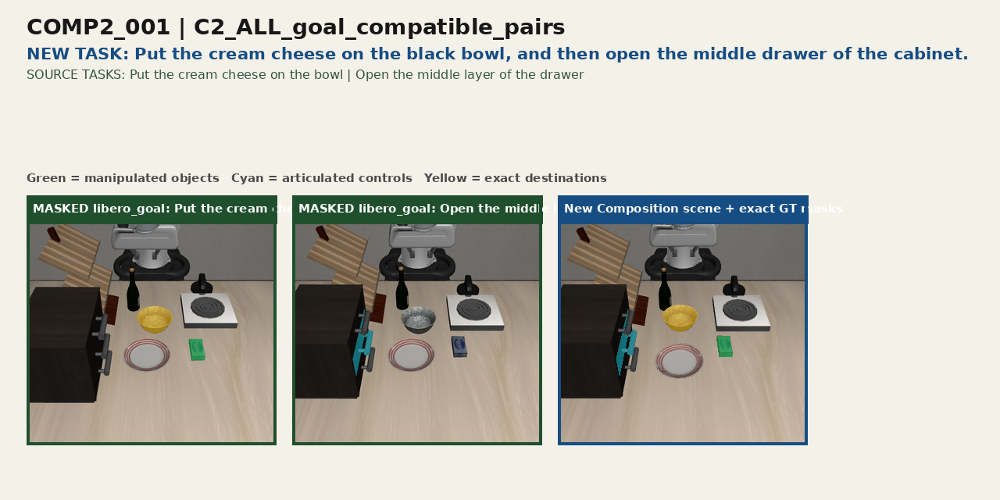
successful episode 0successful episode 3
Composition task: Put the alphabet soup in the basket, and then put the butter in the basket.
Original source task(s): Pick the alphabet soup and place it in the basket | Pick the butter and place it in the basket
Source: libero_object · pick_up_the_alphabet_soup_and_place_it_in_the_basket;pick_up_the_butter_and_place_it_in_the_basket
Construction: See task metadata.
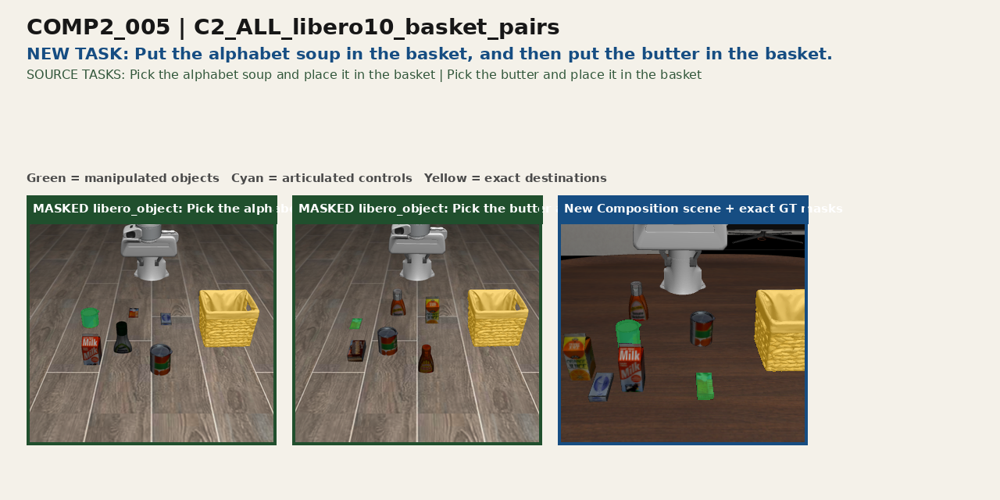
successful episode 2successful episode 3
Composition task: Put the alphabet soup in the basket, and then put the cream cheese box in the basket.
Original source task(s): Pick the alphabet soup and place it in the basket | Pick the cream cheese and place it in the basket
Source: libero_object · pick_up_the_alphabet_soup_and_place_it_in_the_basket;pick_up_the_cream_cheese_and_place_it_in_the_basket
Construction: See task metadata.
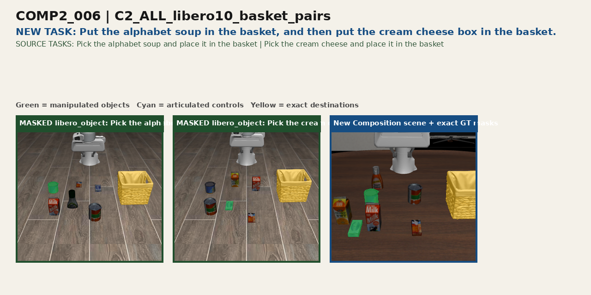
successful episode 0
Composition task: Put the butter in the basket, and then put the milk in the basket.
Original source task(s): Pick the butter and place it in the basket | Pick the milk and place it in the basket
Source: libero_object · pick_up_the_butter_and_place_it_in_the_basket;pick_up_the_milk_and_place_it_in_the_basket
Construction: See task metadata.
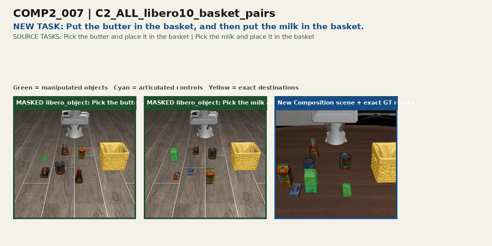
successful episode 0
Composition task: Put the butter in the basket, and then put the tomato sauce in the basket.
Original source task(s): Pick the butter and place it in the basket | Pick the tomato sauce and place it in the basket
Source: libero_object · pick_up_the_butter_and_place_it_in_the_basket;pick_up_the_tomato_sauce_and_place_it_in_the_basket
Construction: See task metadata.
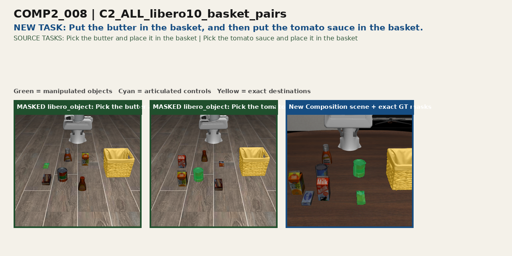
successful episode 1successful episode 3successful episode 4
Composition task: Put the cream cheese box in the basket, and then put the tomato sauce in the basket.
Original source task(s): Pick the cream cheese and place it in the basket | Pick the tomato sauce and place it in the basket
Source: libero_object · pick_up_the_cream_cheese_and_place_it_in_the_basket;pick_up_the_tomato_sauce_and_place_it_in_the_basket
Construction: See task metadata.
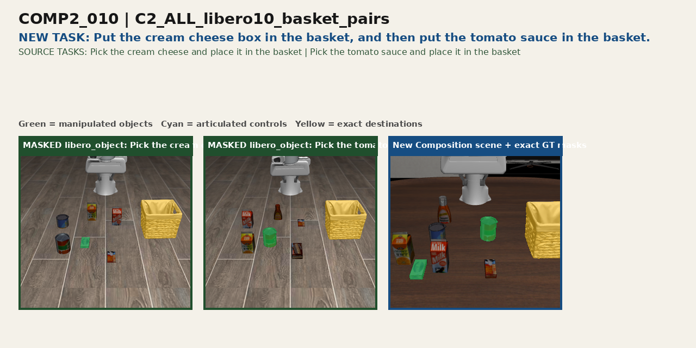
successful episode 1
Composition task: Put the bbq sauce in the basket, and then put the chocolate pudding in the basket.
Original source task(s): Pick the bbq sauce and place it in the basket | Pick the chocolate pudding and place it in the basket
Source: libero_object · pick_up_the_bbq_sauce_and_place_it_in_the_basket;pick_up_the_chocolate_pudding_and_place_it_in_the_basket
Construction: See task metadata.
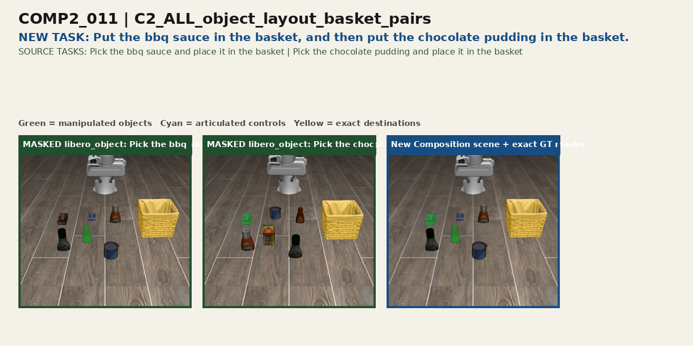
successful episode 0
Composition task: Put the butter in the basket, and then put the tomato sauce in the basket.
Original source task(s): Pick the butter and place it in the basket | Pick the tomato sauce and place it in the basket
Source: libero_object · pick_up_the_butter_and_place_it_in_the_basket;pick_up_the_tomato_sauce_and_place_it_in_the_basket
Construction: See task metadata.
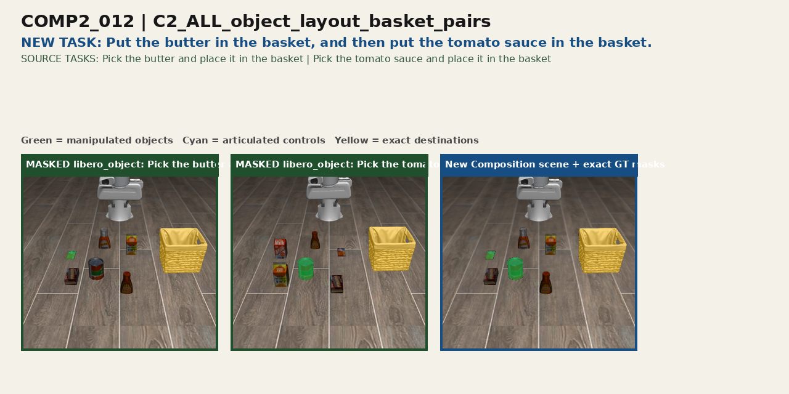
successful episode 0successful episode 1successful episode 2successful episode 3successful episode 4
Composition task: Put the ketchup in the basket, and then put the bbq sauce in the basket.
Original source task(s): Pick the ketchup and place it in the basket | Pick the bbq sauce and place it in the basket
Source: libero_object · pick_up_the_ketchup_and_place_it_in_the_basket;pick_up_the_bbq_sauce_and_place_it_in_the_basket
Construction: See task metadata.
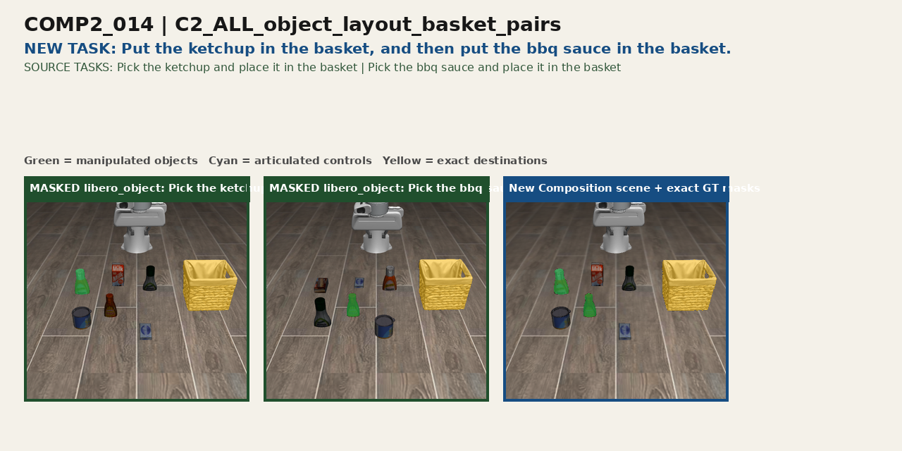
successful episode 0
Composition task: Put the black bowl on the plate, and then put the wine bottle on the rack.
Original source task(s): Put the bowl on the plate | Put the wine bottle on the rack
Source: libero_goal · put_the_bowl_on_the_plate;put_the_wine_bottle_on_the_rack
Construction: See task metadata.
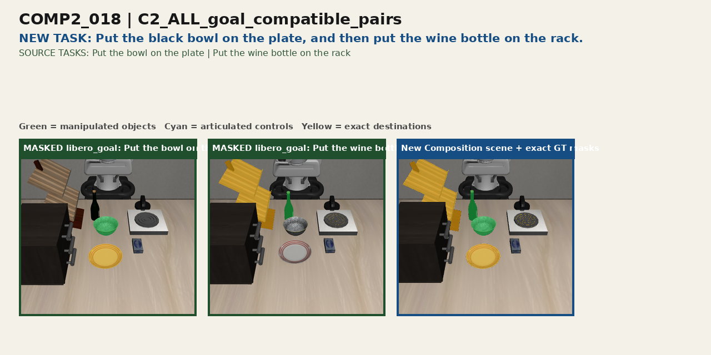
successful episode 3
Composition task: Put the black bowl on the plate, and then open the middle drawer of the cabinet.
Original source task(s): Put the bowl on the plate | Open the middle layer of the drawer
Source: libero_goal · put_the_bowl_on_the_plate;open_the_middle_drawer_of_the_cabinet
Construction: See task metadata.
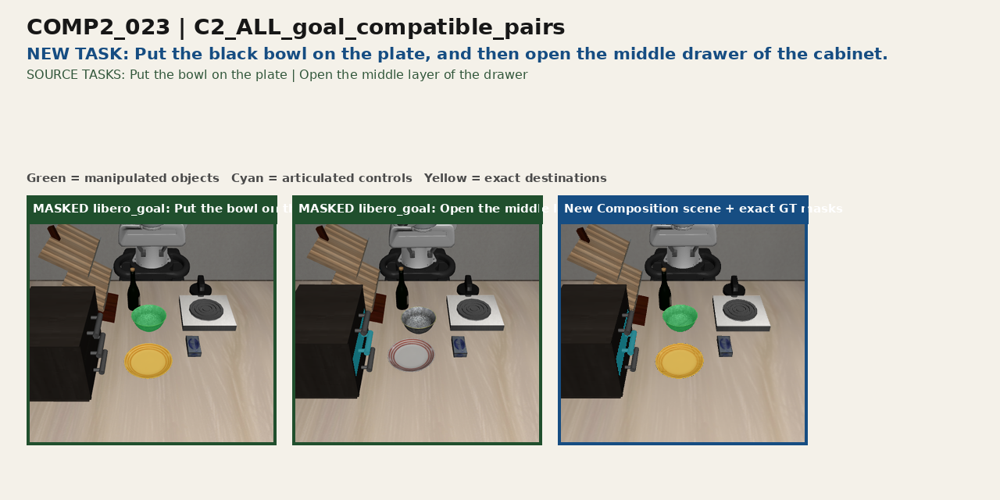
successful episode 2
Composition task: Put the cream cheese on the black bowl, and then push the plate to the front of the stove.
Original source task(s): Put the cream cheese on the bowl | Push the plate to the front of the stove
Source: libero_goal · put_the_cream_cheese_in_the_bowl;push_the_plate_to_the_front_of_the_stove
Construction: See task metadata.
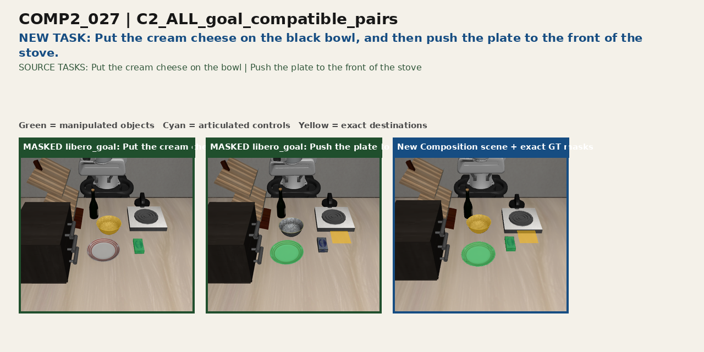
successful episode 3
Composition task: Put the cream cheese on the black bowl, and then turn on the stove.
Original source task(s): Put the cream cheese on the bowl | Turn on the stove
Source: libero_goal · put_the_cream_cheese_in_the_bowl;turn_on_the_stove
Construction: See task metadata.
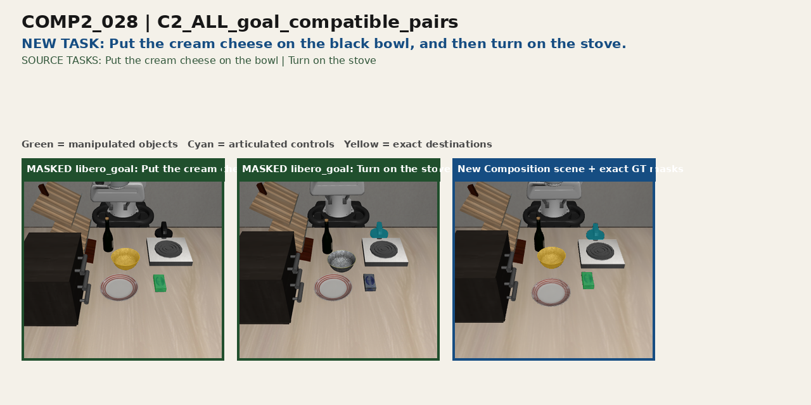
successful episode 4
Composition task: Push the plate to the front of the stove, and then open the middle drawer of the cabinet.
Original source task(s): Push the plate to the front of the stove | Open the middle layer of the drawer
Source: libero_goal · push_the_plate_to_the_front_of_the_stove;open_the_middle_drawer_of_the_cabinet
Construction: See task metadata.
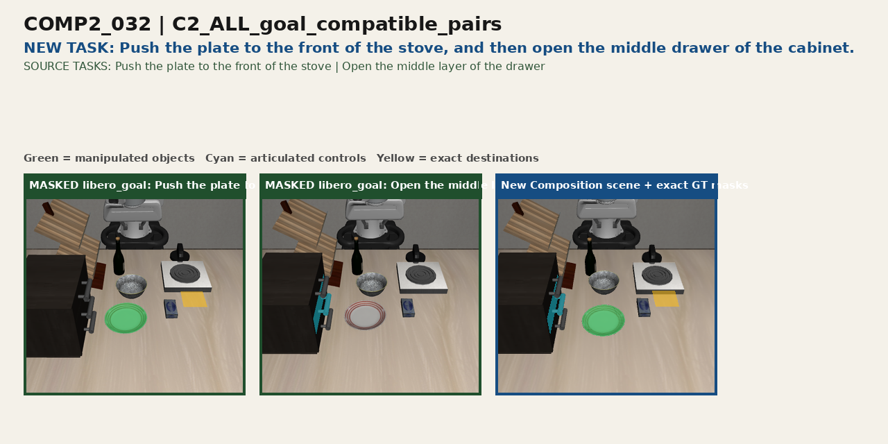
successful episode 3
Composition task: Put the moka pot on the stove, and then turn off the stove.
Original source task(s): turn on the stove and put the moka pot on it
Source: libero_10 · KITCHEN_SCENE3_turn_on_the_stove_and_put_the_moka_pot_on_it
Construction: See task metadata.
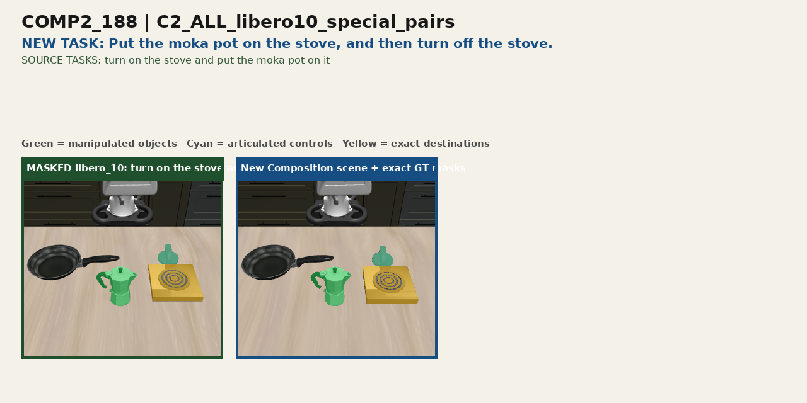
successful episode 3
Composition task: Put the alphabet soup in the basket, and then put the tomato sauce in the basket.
Original source task(s): Pick the alphabet soup and place it in the basket | Pick the tomato sauce and place it in the basket
Source: libero_object · pick_up_the_alphabet_soup_and_place_it_in_the_basket;pick_up_the_tomato_sauce_and_place_it_in_the_basket
Construction: See task metadata.
successful episode 2
Composition task: Put the chocolate pudding in the basket, and then put the orange juice in the basket.
Original source task(s): Pick the chocolate pudding and place it in the basket | Pick the orange juice and place it in the basket
Source: libero_object · pick_up_the_chocolate_pudding_and_place_it_in_the_basket;pick_up_the_orange_juice_and_place_it_in_the_basket
Construction: See task metadata.
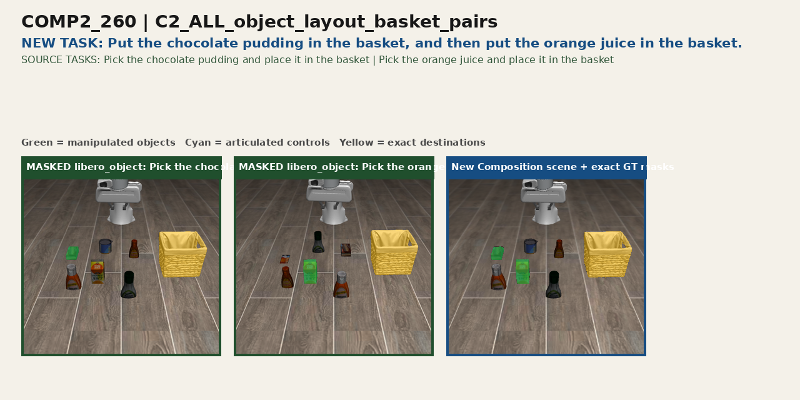
successful episode 2
Composition task: Put the milk in the basket, and then put the cream cheese box in the basket.
Original source task(s): Pick the milk and place it in the basket | Pick the cream cheese and place it in the basket
Source: libero_object · pick_up_the_milk_and_place_it_in_the_basket;pick_up_the_cream_cheese_and_place_it_in_the_basket
Construction: See task metadata.
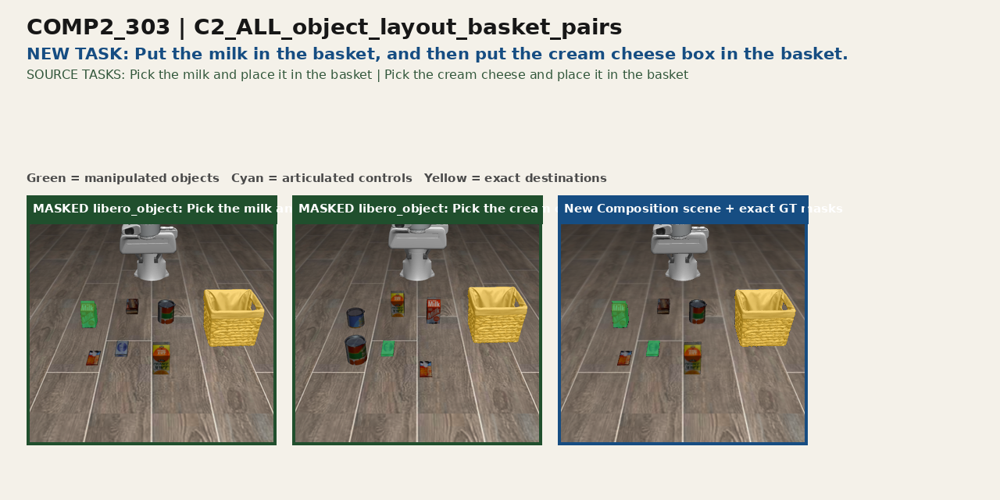
successful episode 3
Composition task: Put the milk in the basket, and then put the butter in the basket.
Original source task(s): Pick the milk and place it in the basket | Pick the butter and place it in the basket
Source: libero_object · pick_up_the_milk_and_place_it_in_the_basket;pick_up_the_butter_and_place_it_in_the_basket
Construction: See task metadata.
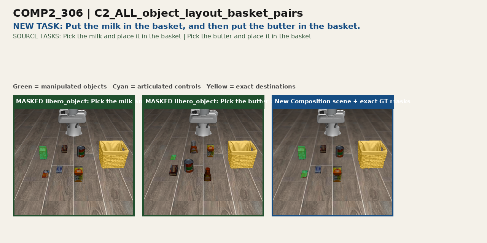
successful episode 0
Composition task: Put the tomato sauce in the basket, and then put the bbq sauce in the basket.
Original source task(s): Pick the tomato sauce and place it in the basket | Pick the bbq sauce and place it in the basket
Source: libero_object · pick_up_the_tomato_sauce_and_place_it_in_the_basket;pick_up_the_bbq_sauce_and_place_it_in_the_basket
Construction: See task metadata.
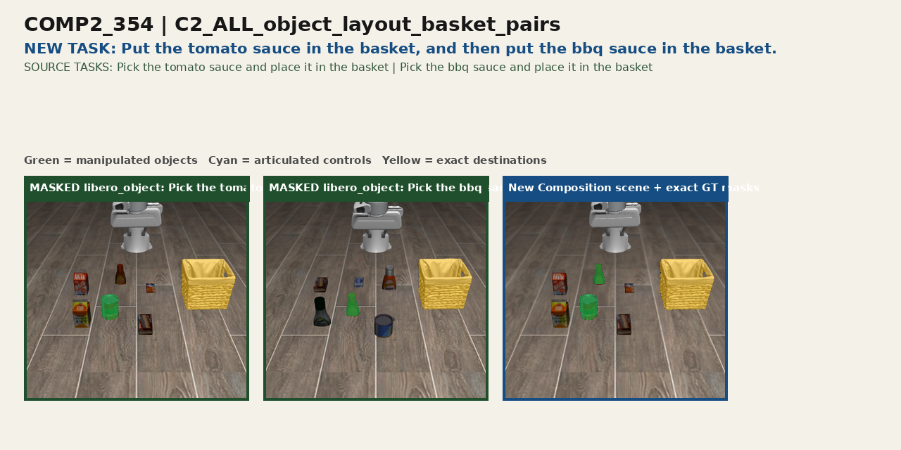
successful episode 1